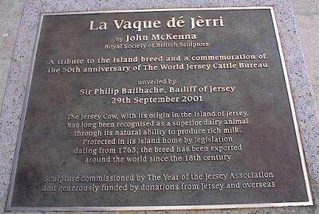
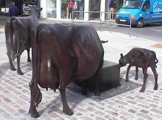

Your recent editorial and letters from correspondents about the cow sculpture have raised a number of valuable points which need some comment. The 2001 Committee, which is responsible for the sculpture project, and the Parish of St Helier authorities are very much alive to the risk of misuse or of vandalism and, with the sculptor, will take all possible precautions while maintaining full public access.
The possibility of damage to sculpture, trees, gardens, planters and other street furniture is ever present but must be balanced against the enrichment these elements bring to all who enjoy them. If we were not prepared to take a certain risk and to fight this battle, our environment would be bleak indeed. The idea of a tribute to the Jersey breed has been warmly welcomed and the wide response to the appeal fund is evidence of this. The form of the tribute and its siting are also matters of public interest, which will, inevitably, produce some degree of healthy controversy. Unlike much contemporary sculpture where the form and materials are left largely to the inventiveness of the sculptor and where much can be gained from an open competition, the brief for this work is clearly limited by the object of the tribute, ie the Jersey cow. We seek to translate it into a noble and durable symbol and, to this end, have cast our net widely to find a sculptor of proven merit, capable of undertaking this considerable commission. Our search in the UK and in France brought several hundred sculptors to our attention and we invited 20 of them to submit examples of their work. On this evidence, we reduced the list to six (including one with strong Jersey connections) and from these made our final choice on the basis of merit and suitability. In our search, we saw examples of animals in concrete, sheet brass, glass fibre, stone, aluminium and wood. We chose bronze because it is a noble and durable material, ideally suited to portray in a realistic way the detail, textures and colours of the local breed. Our sculptor, John McKenna, of the Royal Society of British Sculptors, has been working on the project for many months. He has had considerable contact with local breeders and their herds and has already produced a copious folio of drawings, photographs and designs. Through ongoing discussions with all the parties involved, ideas are constantly being clarified, details are being refined and composition amended to respect authenticity, to please the eye and to suit the site. The form of the sculpture will evolve slowly during the next year and the definitive version will finally be revealed at the unveiling in September 2001. If we can find suitable premises, we intend that part of this long creative process will take place in a workshop in Jersey, open to the public. Whatever the theme and materials and whoever the sculptor, the success of a public sculpture depends to a large extent on the site. The 2001 Committee has visited and considered a great number of possibilities around the Island and, after much discussion with various bodies, has decided, in collaboration with the Parish of St Helier authorities, to place the sculpture in the Island's capital, where it will be seen and enjoyed by the greatest number of people, residents and visitors alike. Drama in sculpture is often created by the unexpected and incongruous. A group of life-size bronze cattle in a paved square, completely approachable and touchable, will make a considerable impact on the public and its message celebrating the Jersey and its breeders will be clear to thousands over future centuries. In just under nine months, Jersey will be entering the Year of the Jersey. This celebration opens up a variety of commercial and cultural possibilities which our committee hopes will be fully developed and exploited. If we choose to make it so, the Year of the Jersey can also be one of those rare moments which allow us to take stock as a community and which, as we honour past achievements, help us to define the future. Aidan Smith, secretary, 2001 Committee La Rosière, Ville de l'Eglise, St Ouen. JEP 4/4/2000
This large commission was for a group of Jersey cattle to be cast in bronze for a prominent site in the town centre in celebration of the world famous cattle breed. For John the sculpture project was a journey of discovery about a farm animal he had often taken for granted but by the end of the project after many months of observing the breed he realized how beautiful an animal bred to perfection could be.
The Year of the Jersey Cattle sculpture commission was an idea originally concieved by Aiden Smith OBE, who was resident on the Island of Jersey. He sought out the great and the good of Jersey and a committee was created to organize the project. A international search to find a suitable sculptor of the right calibre was made by the sculpture committee. A shortlist was made and John McKenna was selected from that shortlist to create the group sculpture. Funds were raised by generous public subscription and the £170, 000 fund to pay for the sculpture was soon achieved as it was such a popular idea John McKenna spent many months working on the Island, modelling the clay originals of the animals, moving from farm to farm, seeking the best examples of the breed. International Jersey Cattle judges visited John to see the work in progress and advised himon the best features of the cattle to incorporate into the sculptures. The clay sculptures were moulded and lost wax cast in bronze at the Castle Fine Arts foundry. John McKenna Sculpture Ltd a4a Art for Architecture High McGownston studio Turnberry South Ayrshire KA26 9JT
